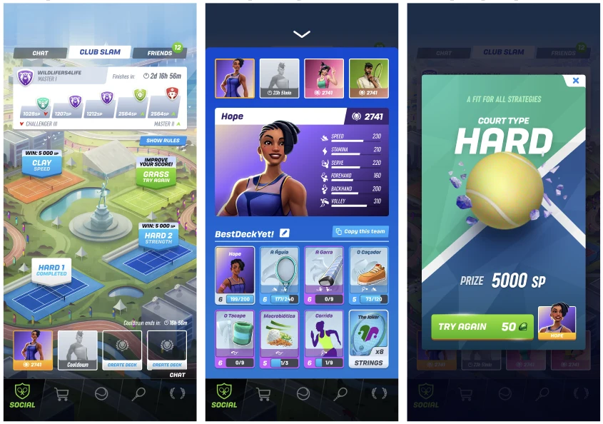
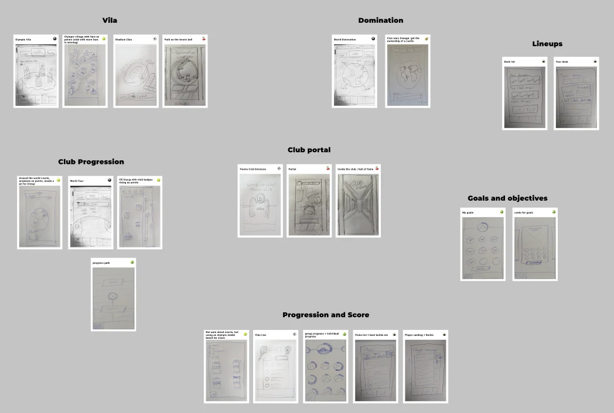
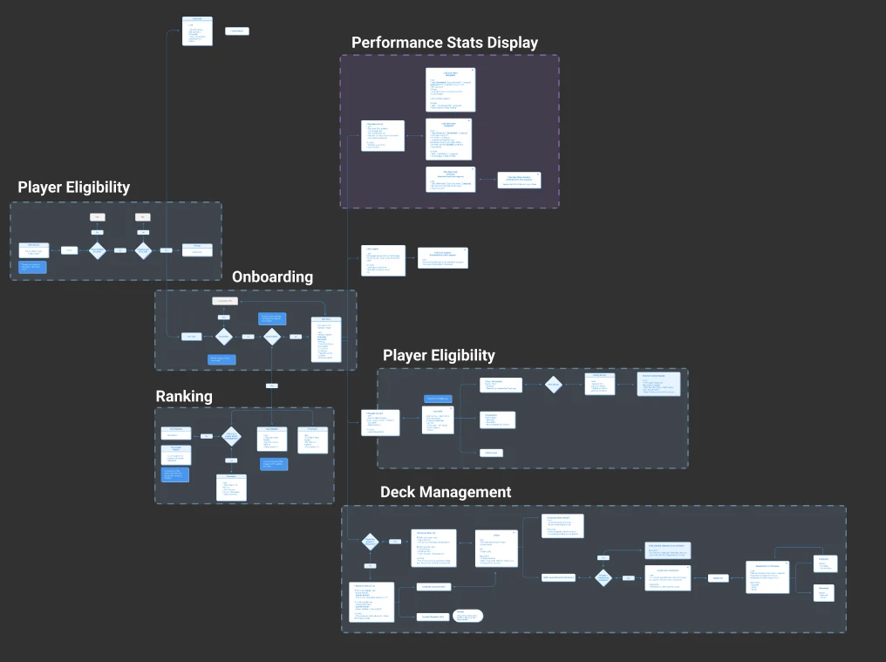
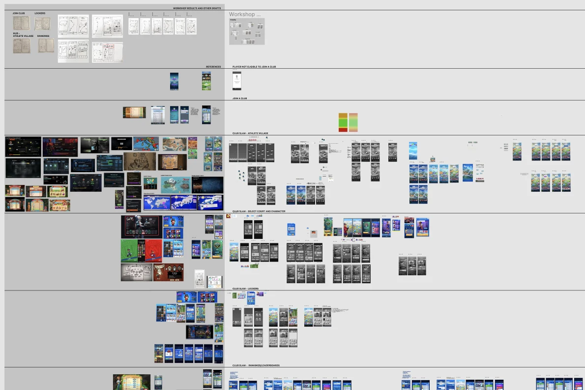
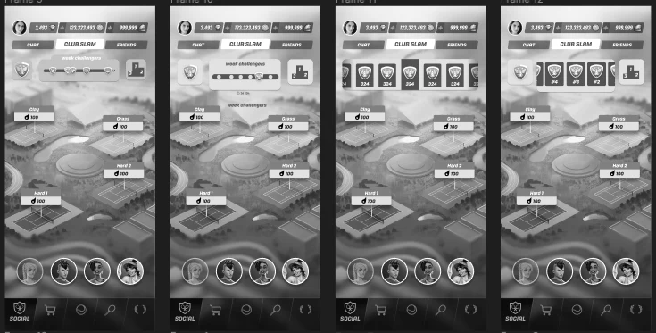
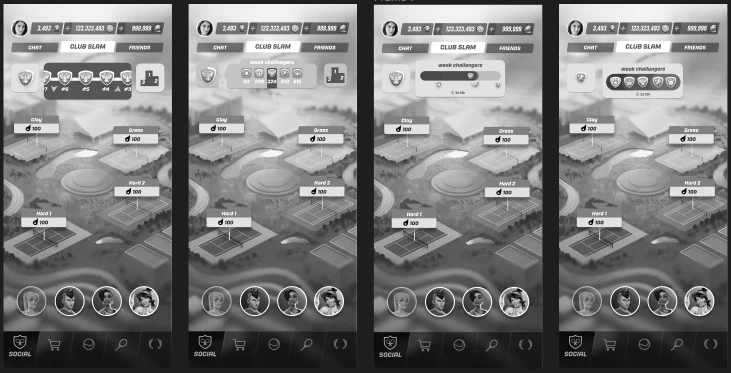
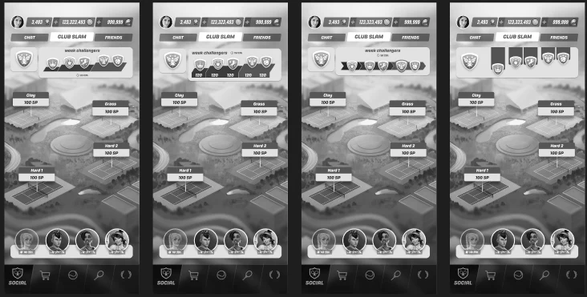

Club Slam UX
The Club Slam was created to improve the social experiences in Tennis Clash, connecting the features Clubs and Friends. The mechanics are very similar to Clan Wars from games like Clash Royale, with an extra twist where the player have to consider the different tennis courts to plan the strategy.
Live feature screens

Know more
The process
Intro
The biggest UX challenge was to find a clear way to display (Score Display) to the players how their team was doing while keeping them engaged with the competition and informed about points and prizes.
UX process
- Align the UX vision of the feature along with the Game Design and Product specs;
- Workshop with the main stakeholders to get feedback and insights from different perspectives regarding the feature's design (product, engineering, design, art);
- Wireframe the flow and main screens;
- Play test with different players the core loop of the feature, collecting feedback on creating decks, finishing the matches, cooldown of the characters and performance of the Club;
- Follow the visual design and art concept process so its aligned with the product vision;
Process details
Workshop with stakeholders to define their vision for the feature's main screen

Feature flow with product and UX specs

Wireframing from workshop insights and benchmark references

Score Display options and iteration evolution


